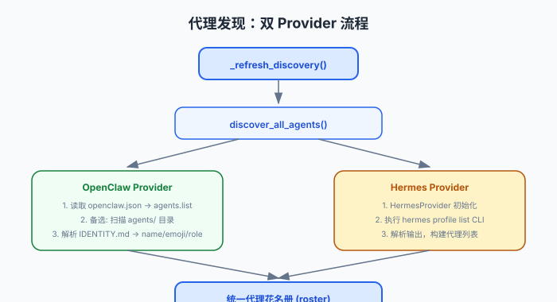

代理发现：双提供者架构
Virtual Office 支持两种 AI 代理来源：OpenClaw（主力）和 Hermes（可选）。发现机制通过读取配置文件和 CLI 命令，构建统一的代理花名册。
了解 JSON 配置文件和 CLI 命令的基本概念。建议先阅读服务器启动，了解 get_roster() 的调用时机。
发现流程概览

图：双 Provider 发现流程。左边 OpenClaw（文件读取），右边 Hermes（CLI 调用），最终汇合到统一花名册。
调用链：start_http_server() → get_roster() → _refresh_discovery() → discover_all_agents()
OpenClaw 代理发现
OpenClaw 是主要的 Agent 来源，通过文件系统读取发现：
读取 openclaw.json
从 openclaw.json 的 agents.list 获取配置的代理列表
备选：扫描 agents/ 目录
如果 JSON 中没有列表，扫描 agents/ 目录作为 fallback
丰富元数据
对每个代理：确定 workspace 路径、解析 IDENTITY.md 获取名称/emoji/角色、查询最后活跃时间、生成确定性 emoji
# discovery.py:31-85
def discover_agents(oc_home):
# Step 1: Read agents from openclaw.json
config_agents = cfg.get("agents", {}).get("list", [])
# Step 2: Fallback to scanning agents/ directory
# Step 3: Enrich each agent with workspace metadata
name, emoji, role = _parse_identity(workspace)Hermes 代理发现
Hermes 是可选的 Agent 来源，通过 CLI 子进程调用发现：
HermesProvider 初始化
HermesProvider(home_path, binary, enabled) 封装 Hermes CLI 交互
执行 CLI 命令
运行 hermes profile list，解析输出构建代理列表
Hermes 适配器的设计原则是"保守" — 只使用安全的 CLI 表面（profile list, status），不读取 secrets/config/memory 文件。这是一种安全边界设计。
统一花名册
两个 Provider 的结果合并为统一的代理花名册：
agent_id，Hermes 用 hermes:profile
HermesProvider 类封装 Hermes 的 CLI 交互，OpenClaw 是默认提供者
身份文件协议
IDENTITY.md 中的 markdown 键值对被解析为代理显示元数据：
# 示例 IDENTITY.md
- **Name:** Moe
- **Emoji:** 🐱
- **Role:** Backend Engineer_parse_identity() 函数（discovery.py:127）解析这些键值对，提取 name、emoji、role 字段。